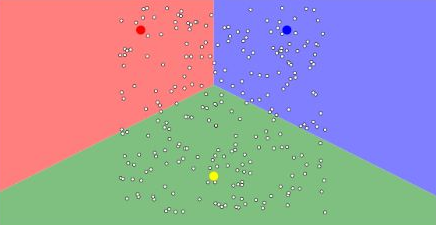
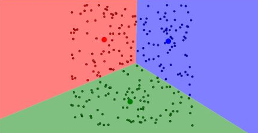
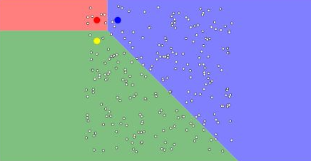
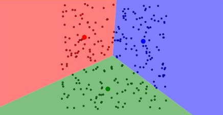

This activity explores clustering techniques through two interactive animations, examining the relationships between data points, their distribution and the underlying logic of clustering algorithms. It involves observing how clustering operates in both animations, including experimenting with the "I'll choose" and "Uniform Points" options in the second animation to understand how different data arrangements influence clustering behaviour.
The observations and comparison of the two animations, alongside contributions to the module wiki and engagement with peers' posts, will be documented in this section of the e-Portfolio. The activity encourages critical analysis of clustering behaviour and the relationship between algorithmic logic and data characteristics.
The activity addresses the following learning outcomes.
Articulate the legal, social, ethical and professional issues faced by machine learning professionals.
Understand the applicability and challenges associated with different datasets for the use of machine learning algorithms.
Completed Activity
My wiki contribution compared the animations by Shabalin (n.d.) and Harris (2014), relating their visual behaviour to the assignment and update steps of K-means. Two experiments using Harris's "I'll choose" and "Uniform Points" options used k = 3, meaning three clusters, to explore the effect of different initial centroid positions. Both produced broadly similar partitions, prompting a closer examination of what convergence actually demonstrates.
Algorithm Logic
Shabalin's animation illustrates the alternating steps of K-means. Each point is assigned to its nearest centroid, then each centroid is recalculated as the mean of its assigned points. Repeating these steps changes the memberships and centres until they stabilise. This follows the least-squares approach associated with Lloyd (1982). The objective is to minimise the within-cluster sum of squared distances, or WCSS.
J = sum over clusters i of sum over points x in C_i of ||x - mu_i||^2
Here, C_i contains the points in cluster i and mu_i is its centroid. Assignment and mean updates do not increase this objective, although reaching a stable solution does not guarantee the global minimum. Harris's shaded regions show which centroid is nearest, making changes in the decision boundaries visible as the centres move.
Manual Initialisation Experiments
In the first experiment, three centroids were placed in the upper-left, upper-right and lower areas of uniformly distributed points.

Reassignment and updating moved the centres towards their assigned points, producing a partition broadly corresponding to those three regions. An additional complete cycle produced no visible change.

In the second experiment, all three centroids started close together near the upper-left.

The initial regions differed considerably in size, but the centroids spread out as memberships changed. The final partition again covered approximately the upper-left, upper-right and lower regions. The recorded observation was that the eleventh tested reassignment-and-update cycle after the initial assignment produced no further visible change.

Restarting the animation generated a different uniform sample, so this was not a controlled comparison of initialisation alone. The similar final layouts show what occurred in these runs, rather than proving that different starting positions always produce equivalent clusters. A stronger comparison would hold the points fixed and vary only the centroids.
Dataset Suitability
K-means produced three groups even though the uniform points showed no three clearly separated natural populations. The chosen k imposed a partition. This illustrates the wider challenge of defining meaningful clusters discussed by Jain (2010). Compact, approximately spherical groups suit K-means better than irregular shapes, while outliers and unequal feature scales can distort its distance calculations. High-dimensional data also make visual judgement more difficult. Silhouette analysis can assess separation and cohesion (Rousseeuw, 1987), but domain knowledge is still needed to interpret the groups.
Reflection
The main learning was that convergence and meaningful clustering are different outcomes. The animations made the update process clear, while the uniform-data experiments showed why a neat partition is insufficient evidence of useful categories. Future comparisons should use fixed data, repeated initialisations and several values of k, with quality measures interpreted alongside the application context.
This matters when clusters inform decisions about people. Incomplete data or unsuitable features can turn existing inequalities into apparently objective categories. Professional practice therefore requires justified feature choices, checks on representation and consequences, and appropriate handling of personal information. Clusters should support informed judgement rather than be treated as established differences between individuals.
Jain, A.K. (2010) 'Data clustering: 50 years beyond K-means', Pattern Recognition Letters, 31(8), pp. 651-666. Available at: https://doi.org/10.1016/j.patrec.2009.09.011 (Accessed: 17 October 2026).
Lloyd, S. (1982) 'Least squares quantization in PCM', IEEE Transactions on Information Theory, 28(2), pp. 129-137. Available at: https://doi.org/10.1109/TIT.1982.1056489 (Accessed: 17 October 2026).
Rousseeuw, P.J. (1987) 'Silhouettes: a graphical aid to the interpretation and validation of cluster analysis', Journal of Computational and Applied Mathematics, 20, pp. 53-65. Available at: https://doi.org/10.1016/0377-0427(87)90125-7 (Accessed: 17 October 2026).